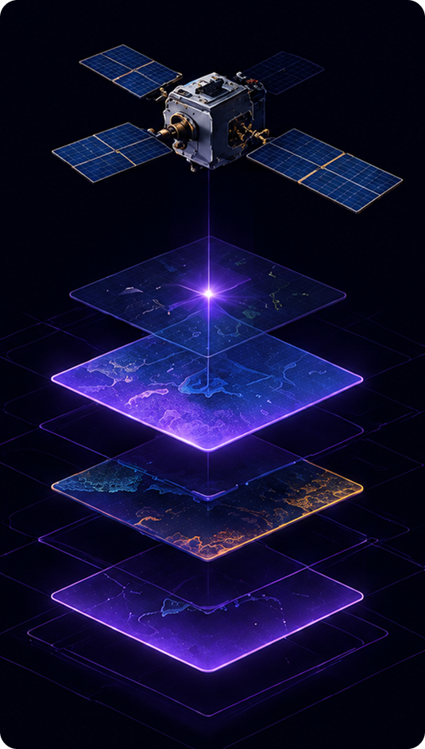

Somos movidos pela missão de usar a tecnologia espacial para monitorar mudanças climáticas, prevenir desastres ambientais e proteger o futuro do planeta através de dados orbitais e inteligência artificial.
Coleta de dados climáticos, térmicos e de radar em alta resolução através de satélites inteligentes.
Algoritmos inteligentes identificam padrões, anomalias e riscos ambientais.
Visualização de dados, dashboards interativos e relatórios personalizados.
Alertas em tempo real e integração com órgãos e sistemas de resposta.
